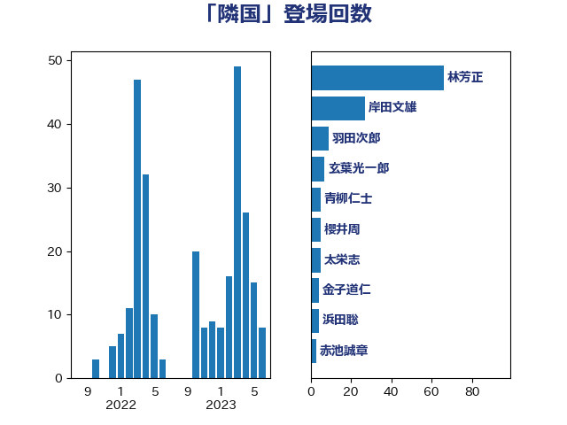

単語「隣国」

| 林芳正 | 自由民主党 | 66 回 |
| 岸田文雄 | 自由民主党 | 27 回 |
| 羽田次郎 | 立憲民主党 | 9 回 |
| 玄葉光一郎 | 立憲民主党 | 7 回 |
| 青柳仁士 | 日本維新の会 | 5 回 |
| 櫻井周 | 立憲民主党 | 5 回 |
| 太栄志 | 立憲民主党 | 5 回 |
| 金子道仁 | 日本維新の会 | 4 回 |
| 浜田聡 | NHK党 | 4 回 |
| 赤池誠章 | 自由民主党 | 3 回 |
| 泉健太 | 立憲民主党 | 3 回 |
| 河西宏一 | 公明党 | 3 回 |
| 斎藤アレックス | 国民民主党 | 3 回 |
| 平木大作 | 公明党 | 3 回 |
| 山田賢司 | 自由民主党 | 3 回 |
| 小西洋之 | 立憲民主党 | 3 回 |
| 吉田宣弘 | 公明党 | 3 回 |
| 下条みつ | 立憲民主党 | 3 回 |
| 高村正大 | 自由民主党 | 2 回 |
| 青山大人 | 立憲民主党 | 2 回 |
| 道下大樹 | 立憲民主党 | 2 回 |
| 稲津久 | 公明党 | 2 回 |
| 石川大我 | 立憲民主党 | 2 回 |
| 田野瀬太道 | 無所属 | 2 回 |
| 榛葉賀津也 | 国民民主党 | 2 回 |
| 松川るい | 自由民主党 | 2 回 |
| 杉本和巳 | 日本維新の会 | 2 回 |
| 岩屋毅 | 自由民主党 | 2 回 |
| 小渕優子 | 自由民主党 | 2 回 |
| 守島正 | 日本維新の会 | 2 回 |
| 國場幸之助 | 自由民主党 | 2 回 |
| 伊藤俊輔 | 立憲民主党 | 2 回 |
| 齋藤健 | 自由民主党 | 1 回 |
| 鷲尾英一郎 | 自由民主党 | 1 回 |
| 高良鉄美 | 無所属 | 1 回 |
| 高橋光男 | 公明党 | 1 回 |
| 高木かおり | 日本維新の会 | 1 回 |
| 音喜多駿 | 日本維新の会 | 1 回 |
| 青山繁晴 | 自由民主党 | 1 回 |
| 長友慎治 | 国民民主党 | 1 回 |
| 鈴木隼人 | 自由民主党 | 1 回 |
| 鈴木敦 | 国民民主党 | 1 回 |
| 重徳和彦 | 立憲民主党 | 1 回 |
| 谷田川元 | 立憲民主党 | 1 回 |
| 藤田文武 | 日本維新の会 | 1 回 |
| 葉梨康弘 | 自由民主党 | 1 回 |
| 菅家一郎 | 自由民主党 | 1 回 |
| 荒井優 | 立憲民主党 | 1 回 |
| 若林洋平 | 自由民主党 | 1 回 |
| 若松謙維 | 公明党 | 1 回 |
| 紙智子 | 日本共産党 | 1 回 |
| 神谷宗幣 | 参政党 | 1 回 |
| 礒崎哲史 | 国民民主党 | 1 回 |
| 石川博崇 | 公明党 | 1 回 |
| 石井苗子 | 日本維新の会 | 1 回 |
| 田島麻衣子 | 立憲民主党 | 1 回 |
| 甘利明 | 自由民主党 | 1 回 |
| 源馬謙太郎 | 立憲民主党 | 1 回 |
| 渡辺周 | 立憲民主党 | 1 回 |
| 清水真人 | 自由民主党 | 1 回 |
| 浜田靖一 | 自由民主党 | 1 回 |
| 浅田均 | 日本維新の会 | 1 回 |
| 浅川義治 | 日本維新の会 | 1 回 |
| 津島淳 | 自由民主党 | 1 回 |
| 森本真治 | 立憲民主党 | 1 回 |
| 松野博一 | 自由民主党 | 1 回 |
| 本田太郎 | 自由民主党 | 1 回 |
| 早坂敦 | 日本維新の会 | 1 回 |
| 斉藤鉄夫 | 公明党 | 1 回 |
| 山添拓 | 日本共産党 | 1 回 |
| 山岡達丸 | 立憲民主党 | 1 回 |
| 山下芳生 | 日本共産党 | 1 回 |
| 尾身朝子 | 自由民主党 | 1 回 |
| 小野田紀美 | 自由民主党 | 1 回 |
| 小野泰輔 | 日本維新の会 | 1 回 |
| 小野寺五典 | 自由民主党 | 1 回 |
| 小林鷹之 | 自由民主党 | 1 回 |
| 小宮山泰子 | 立憲民主党 | 1 回 |
| 寺田稔 | 自由民主党 | 1 回 |
| 宮澤博行 | 自由民主党 | 1 回 |
| 奥野総一郎 | 立憲民主党 | 1 回 |
| 大塚耕平 | 国民民主党 | 1 回 |
| 塩村あやか | 立憲民主党 | 1 回 |
| 堀井巌 | 自由民主党 | 1 回 |
| 城内実 | 自由民主党 | 1 回 |
| 吉田はるみ | 立憲民主党 | 1 回 |
| 勝部賢志 | 立憲民主党 | 1 回 |
| 務台俊介 | 自由民主党 | 1 回 |
| 前原誠司 | 国民民主党 | 1 回 |
| 伊波洋一 | 無所属 | 1 回 |
| 串田誠一 | 日本維新の会 | 1 回 |
| 中川正春 | 立憲民主党 | 1 回 |
| 上田清司 | 国民民主党 | 1 回 |
| 三上えり | 立憲民主党 | 1 回 |
| おおつき紅葉 | 立憲民主党 | 1 回 |